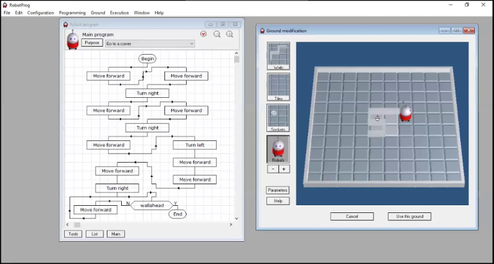

Historique des Serious Game (source : Wikipédia)
Dès le xve siècle, avec le mouvement humaniste en Italie, on recense l'oxymore « Serio Ludere ».
Ce terme renvoie à l'idée de traiter d'un sujet « sérieux » avec une approche « amusante ».
Cela se retrouve ainsi dans le style littéraire où un ton léger et humoristique peut dénoncer des problèmes de société par exemple. En France, Rabelais est un humaniste qui fait notamment usage du Serio Ludere.
Vers la fin du xviiie siècle et le début du xixe siècle, l'amirauté britannique et l'armée prussienne s'intéressent sérieusement à l'emploi de simulation ludique pour développer de nouvelles tactiques et former leurs futurs cadres : ainsi en 1820, la Prusse va adopter le Kriegspiel, le « jeu de guerre » en français, comme outil de formation de ses officiers.
Jusqu'au développement de l'informatique, le jeu de guerre sera le principal jeu sérieux employé par la quasi-totalité des armées du monde.
C'est quoi un Serious Game ?
Un serious game est un jeu vidéo conçu dans un but autre que le simple divertissement. Il combine des éléments ludiques avec des objectifs sérieux tels que l'apprentissage, la formation, la sensibilisation ou la résolution de problèmes. Ces jeux sont souvent utilisés dans des contextes éducatifs, professionnels ou de santé pour transmettre des connaissances, développer des compétences ou simuler des situations réelles. En somme, c'est une manière ludique d'aborder des sujets sérieux.
Exemple de Serious Game

RobotProg permet un apprentissage progressif de la programmation par niveaux successifs.
Le dernier niveau permet de programmer plusieurs robots et d'exécuter leurs programmes en même temps sur le même terrain. Les robots peuvent alors jouer à différents jeux.
RobotProg contient une documentation complète portant sur son utilisation et sur la programmation.
Des outils pour créer des serious game :
C'est quoi Greenfoot ?
Greenfoot est un environnement de développement intégré (IDE) conçu pour l'apprentissage de la programmation informatique, en particulier pour les débutants. Il est principalement utilisé pour enseigner la programmation orientée objet en Java. Greenfoot propose une approche visuelle et interactive qui permet aux étudiants de créer des jeux, des simulations et des animations tout en apprenant les concepts fondamentaux de la programmation.
L'interface de Greenfoot met en avant un environnement de programmation orienté objet dans lequel les étudiants peuvent créer et manipuler des objets graphiques (acteurs) à l'intérieur d'un scénario. Les débutants peuvent se familiariser avec les concepts tels que les classes, les objets, les méthodes et l'héritage tout en créant des projets visuels et interactifs.
Greenfoot est souvent utilisé dans les cours d'informatique au niveau débutant, en particulier dans les écoles secondaires et les premières années de l'enseignement supérieur. Il fournit une plateforme ludique et engageante pour l'apprentissage de la programmation, ce qui peut aider les étudiants à développer des compétences fondamentales en informatique de manière pratique et amusante.
Greenfoot et les Serious Game
Greenfoot peut être utilisé pour créer des jeux sérieux (serious games). Les jeux sérieux sont des applications interactives conçues non seulement pour divertir, mais aussi pour apporter des connaissances, enseigner des compétences spécifiques ou aborder des sujets sérieux de manière ludique. Greenfoot offre un environnement visuel qui facilite la création de jeux interactifs, ce qui en fait un choix attractif pour développer des serious games, en particulier pour les débutants en programmation.
En utilisant Greenfoot, il est possible de créer des simulations, des scénarios éducatifs ou des jeux sérieux qui abordent des concepts spécifiques tout en offrant une expérience interactive. Les acteurs (objets graphiques) dans Greenfoot peuvent représenter des entités et des concepts du monde réel, et les interactions entre ces acteurs peuvent être programmées pour refléter des situations réalistes.